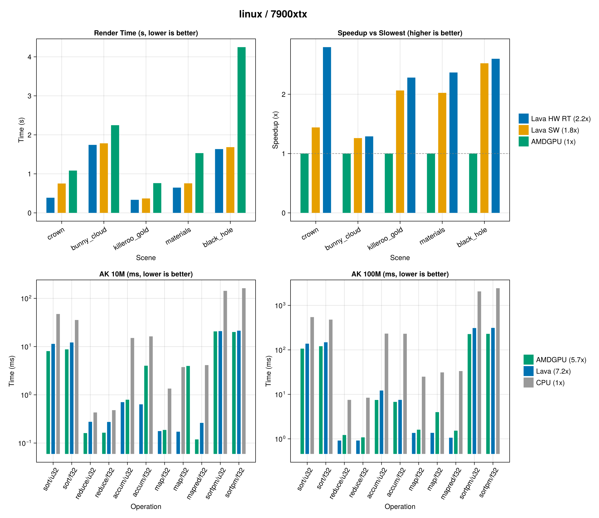
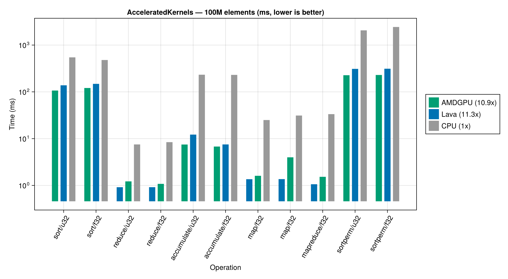
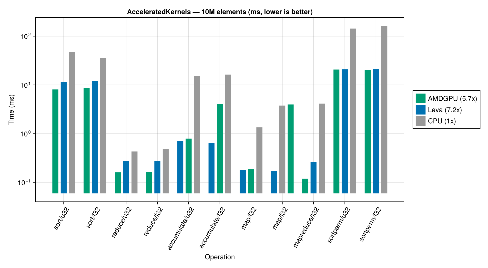

Performance
Numbers below are on AMD RX 7900 XTX / Ryzen 9 7900X unless otherwise noted. The benchmark scripts live in RayDemo/benchmark and the corresponding compute benchmarks under Lava/benchmarks/run_benchmarks.jl.
Render benchmarks
Rendering uses Hikari's wavefront volumetric path tracer via RayMakie.

Headline:
| Lava SW vs AMDGPU SW | Lava HW vs Lava SW | Lava SW vs pbrt-v4 (24 CPU threads) | |
|---|---|---|---|
| Render speedup | 1.4 – 2.5× | 1.0 – 2.3× (geometry-heavy) | 5 – 32× |
Hardware ray tracing adds the biggest wins on geometry-dense scenes (Crown, Killeroo Gold). Software-BVH and HW-RT match within ~3 % per-pixel mean and verify bit-exact against pbrt-v4 on the same scene description.
Compute benchmarks (AcceleratedKernels.jl)


- Lava wins on compute-bound and dispatch-sensitive operations — up to 23× faster on
map(sin, …)at 10M elements. - AMDGPU wins on memory-bound sort/sortperm where its native HIP path has the edge.
What makes Lava fast
Most of the wins come from removing per-dispatch overhead:
@generatedargument packing. All kernel arguments are written directly into a mapped GPU memory buffer in a single generated function. NoAny[]boxing, noInlineStructArgvectors, nozeros(UInt8, N)intermediate buffer.- Pipeline cache keyed by IR hash. First dispatch builds the
VkPipeline, subsequent ones reuse it. - Buffer Device Address. Kernel args travel through one 8-byte push constant pointing at the BDA. No per-buffer descriptor sets.
- Compile-time ghost-type elision. Zero-size types (e.g. KA context handles) never reach the GPU.
- Batched command buffers. Multiple dispatches record into one
VkCommandBufferand submit together. Auto-flush on host reads keeps semantics simple. - Unified/BAR memory for small buffers. ≤ 64-byte buffers (typical for KA workqueue counters) use host-visible device memory, so
Array(buf)is one fence instead of one fence + one staging copy.
Per-dispatch recording is 1.8 µs end-to-end (vs ~8.8 µs in AMDGPU), and the full dispatch path including submission is 27 µs when batched.
Tuning your own code
For latency-sensitive code:
- Avoid forcing host↔device sync.
Array(big_buffer)triggers a flush. - Re-use kernels — first compile of a
@kernelis slow (a few hundred ms), subsequent dispatches are cached. - Use Unified/BAR memory for tiny ping-pong buffers between CPU and GPU.
For throughput-sensitive code:
- Make sure the kernel is fat enough that the per-dispatch 27 µs is amortised. At 10M Float32 adds the kernel itself runs in a fraction of a millisecond — overhead dominates if you also do 10 such kernels sequentially.
- Use
Atomix.@atomicrather than ad-hoc CAS loops where supported. - Profile with
set_dispatch_logging!(true)— see Debugging.